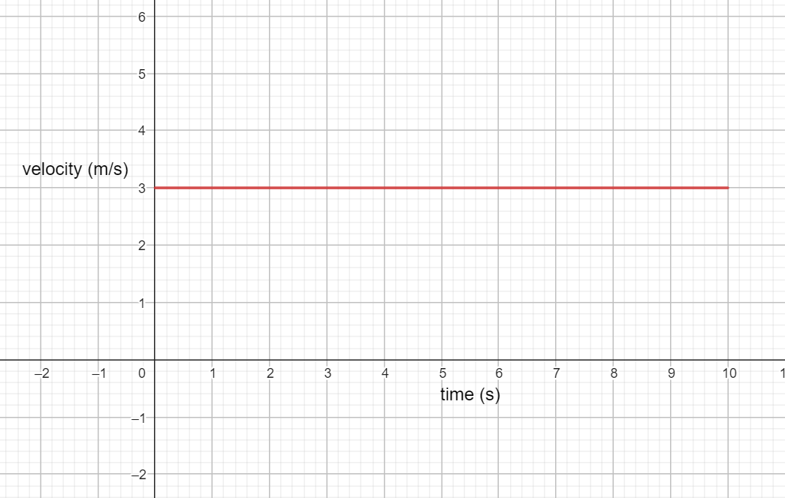
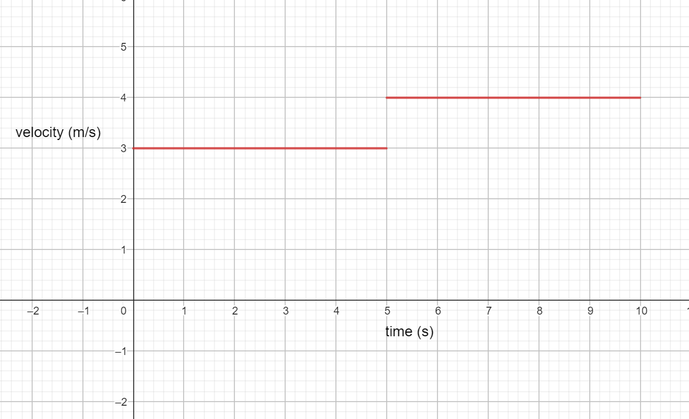
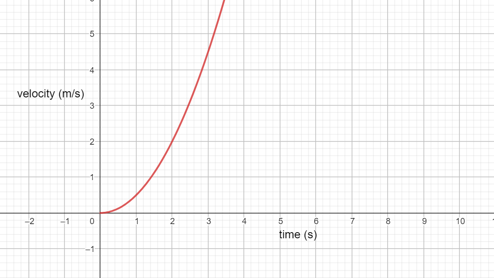
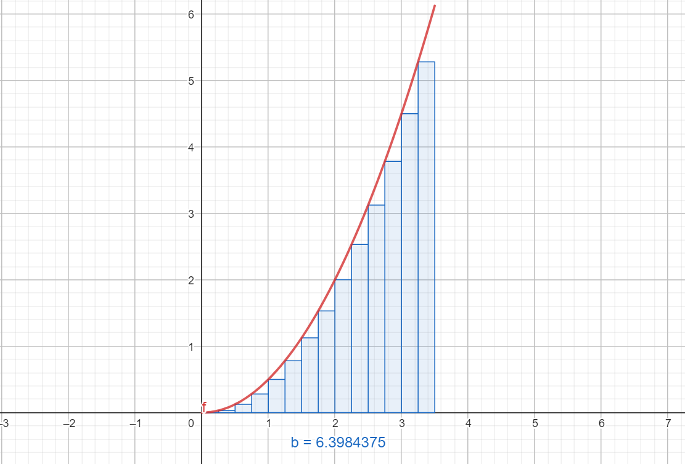
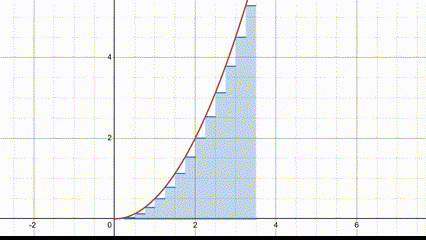
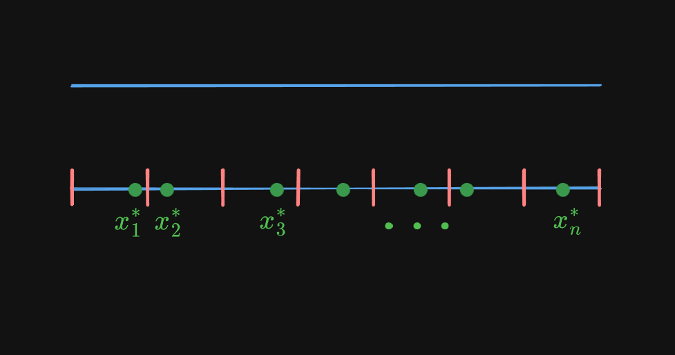
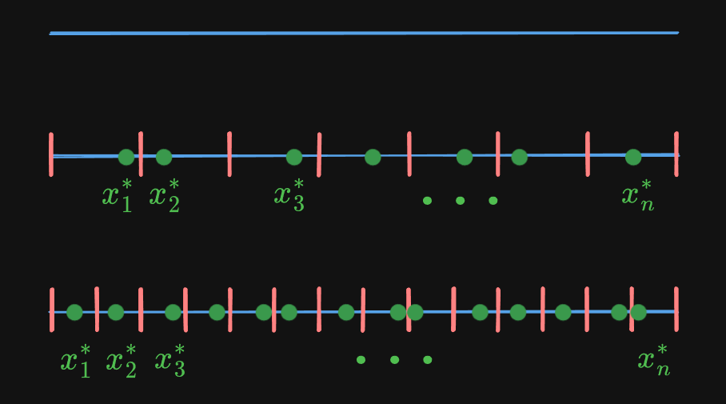
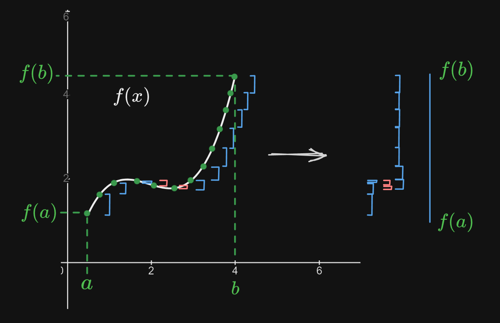

Integrals
Background
Suppose you have a graph that shows someone's velocity in a certain period of time:
How might we go about finding how far this person moved? Well, if they moved at 3 meters per second for 10 seconds, then it makes sense that they moved 30 meters.
Mathematically this looks like:
$$ \begin{align} &3\mathrm{\frac{m}{s}}\times10\mathrm{s} \\ =\ &3\mathrm{\ m}\times 10 \\ =\ &30\mathrm{m} \end{align} $$
What if the person's velocity graph looked like this?
This person moved at 3 meters per second for 5 seconds. Then, they moved at 4 meters per second for 5 more seconds. So using the same method as before, they moved $3(5) + 4(5)=35$ meters.
But, in real life people don't move at constant speeds — they speed up and slow down. So, what do we do for non-constant graphs? (for example, this graph of $y=\frac{1}{2}x^2$)
The Area Under The Curve
Earlier, when we found distance from a velocity graph, we can interpret our math as finding the area under a curve.
For the first graph, we made a rectangle: a height of 3 and a length of 10 gave us $3 \times 10=30$.
For the second graph, we used two rectangles. One with a height of 3 and length of 5, and another with a height of 4 and a length of 5, for a total of $3(5) + 4(5)=35$.
Here, for our curved line, we can employ a similar strategy. By using a series of rectangles, we can approximate the area underneath the function.
Each rectangle has height $f(x)$. By increasing the number of rectangles and reducing the width we can get a better approximation:
An integral uses this idea and takes it to the extreme to get a perfect value. it uses rectangles of height $f(x)$ and width $dx$, where $dx$ is an infinitely small change in x. Then, it adds up all those rectangles together. In mathematical form, this looks like:
$$ \int_{x_{1}}^{x_{2}} f(x) \, dx $$
$x_{1}$ and $x_{2}$ is the range of the integral, the boundaries of where we make and add rectangles.
Addition
Earlier, when describing the process in which we would find the area under the curve, I said that we would "add" the rectangles of height $f(x)$ and "width" $dx$. This is another way of understanding the integral: As a continuous addition.
Let's use a physical example. Say we have a line of length $L$. We can break down this line into infinitely small chunks of size $dl$. So,
$$ L = \int dl $$
Here, the integral "adds up" all of the chucks of size $dl$ to get the total length $L$.
Now another example. What if we wanted to find the total mass of some object, say another line? I would go about finding the mass by multiplying the length of the line $L$ with the density of the material $\rho$. But what if the density of the object changed throughout the material, say according to some function? For example,
$$ \rho(x) = x^{2} $$
Now the density of the material changes according to what $x$ coordinate you are at. One way to go about approximating the total mass is to break the line into parts, then find the mass of each part, perhaps by choosing some point in the chunk to represent the density of that chunk. If we were to break the line into $n$ parts, then for any $x_{n}$, we choose some random $x_{n}^{*}$ to represent the chunk.
So the mass of some chunk $i$ is approximated by
$$ m \approx \rho(x_{i}^{*}) (x_{i+1}-x_{i}) $$
where $x_{i+1}$ is the beginning of the previous chunk (therefore the end of chunk $i$) and $x_{i}$ is the beginning of the current chunk. So $x_{i+1} - x_{i}$ is the length of chunk $i$.
Note how we plugged in $x_{i}^{*}$ into the density function. This is what is meant by choosing a random point to represent the density of the whole chunk.
To approximate the total mass of the line, we must sum the mass of each chunk. Here we sum from $i=0$ to $i=n$.
$$ M \approx \sum_{i=0}^{n} \rho(x_{i}^{*})(x_{i+1}-x_{i}) $$
Or with the density function $\rho(x)=x^{2}$,
$$ M \approx \sum_{i=0}^{n} (x_{i}^{*})^{2} (x_{i+1}-x_{i}) $$
How can we get a better approximation? Well, if we choose smaller chunks (therefore a higher quantity of chunks in order to still sum up to $L$), we can be more precise in how we represent density. Mathematically, we do this by increasing $n$, the upper limit of our summation. If fact, the more we increase $n$, the better our approximation.
This idea of approximating and then improving that approximation may remind you of the previous page (derivatives), where we approximated the slope and then improved in until it was instantaneous. The breakthrough there was the use of the limit. Here, we use the same technique. When we take the limit as $n$ goes to infinity, we get a perfect calculation of the total mass.
$$ M = \lim_{ n \to \infty } \sum_{i=0}^{n} \rho(x_{i}^{*})(x_{i-1}-x_{i}) $$
This perfect calculation is also known as an integral!
$$ \boxed{ M = \lim_{ n \to \infty } \sum_{i=0}^{n} \rho(x_{i}^{*})(x_{i-1}-x_{i}) = \int_{0}^{L} \rho(x)\,dx } $$
Note that when we have infinite chunks, the length of those chunks must be infinitely small to add up to $L$. So the length becomes $dx$. Additionally, we no longer need to count by $i$, nor take some random point of $i$, so that goes away. In the example of $\rho(x)=x^{2}$, we have
$$ M = \int_{0}^{L} x^{2}\,dx $$
Using one of our "Special Rules" (Section below) we can calculate this integral.
$$ M = \int_{0}^{L} x^{2}\,dx = \left. \left( \frac{1}{3}x^{3} \right) \right|_{0}^{L} =\frac{1}{3}L^{3} - \frac{1}{3}(0)^{3} = \boxed{ \frac{1}{3}L^{3} } $$
It is in this way that an integral can be seen as a continuous, as opposed to a discrete, summation. Analyzed closely, one would see that viewing the integral as "the area under the curve" and viewing the integral as the continuous summation are really two sides of the same coin. In the next section, we will see the third, perhaps most fundamental side of this coin (not how coins work but whatever), and how the integral relates to the derivative.
The Fundamental Theorem of Calculus
Apart from being seen as "the area under the curve" and the continuous summation, the integral is also seen as the inverse of the derivative. This is most explicitly seen through the Fundamental Theorem of Calculus, below.
$$ \int_{a}^{b} f'(t)\,dt = f(b)-f(a) $$
Or in English: the integral from $a$ to $b$ of the derivative of $f(t)$, is equal to $f(t)$ from $a$ to $b$.
It may be difficult to see how the integral could be the inverse of the derivative. How can the area under a function be opposite to that of slope of a function? However, through analyzing the Fundamental Theorem of Calculus, we see that it all makes sense.
What does the derivative represent? It represents the change in a function at some point.
What does the integral represent? It can be seen as a continuous summation of a function over some bounds.
So to take the integral of the derivative, you are continuously summing the change in a function.
I've drawn an image to help visualization. The function $f(x)$ spans from $x=a$ to $x=b$. The change in the green points throughout the function is denoted by the blue and red spans, where blue is an increase and red is a decrease. By summing up the total change, we find that we get the total change in the function, $f(b)-f(a)$.
In other words, by taking the integral of the derivative, we are summing up all the small changes in the function from bounds $a$ to $b$, in order to get the total change in the function, $f(b)-f(a)$.
By taking the integral of the derivative of a function $f$, we get the original function $f$ at the bounds.
In this way, the derivative and integral are inverses. We further develop this idea in the next section.
The Antiderivative
While we have seen that the derivative and integral are inverses, when we take the integral of the derivative of some function $f(x)$, rather than getting $f(x)$ on its own we get $f(x)$ at the bounds.
In order to avoid this, we often represent the integral without the bounds, like so.
$$ \int f(x)\,dx $$
This version of integral is called the indefinite integral, or the antiderivative. The version with bounds is called the definite integral.
The indefinite integral much better captures the idea that the integral is the inverse of the derivative, since
$$ \int f'(x)\,dx = f(x)+C $$
But wait, what is this $+\,C$ at the end? This is called the integration constant, and is a side effect of taking the integral without bounds. We no longer get our original function, we get our function shifted up and down by some unknown value, $C$.
Let's take an example to see how this constant might shown up. In our example, we have,
$$ f(x) = x^{2}+8 $$
When we take the derivative of $f(x)$, we get
$$ f'(x)=2x $$
When we take the antiderivative of $f'(x)$, we should get back $f(x)=x^{2}+8$.
$$ \int f'(x)\,dx = \int 2x\,dx = x^{2} $$
But what's this? The $+\,8$ at the end of $f(x)$ is gone! Since constants go away during the derivative process, when we took the antiderivative we did not get the 8 back. It is for this reason that we add a $+C$ at the end of our antiderivatives. So in our example,
$$ \int f'(x)\,dx =\int 2x\,dx = x^{2}+C $$
If we knew what are original function was at some point, say $f(0)=8$, then we could solve for $C$ to find it is 8.
$$ \begin{align} f(x) & = x^{2}+C \\ f(0) & = 0^{2}+C \\ f(0) & =C & & \text{but }f(0)=8 \\ 8 & = C & & \text{we plug in }8\text{ for }C\\ f(x) & = \boxed{ x^{2}+8 } \end{align} $$
Special Rules
Like with the derivative, we found many special rules to compute the integral. Like with the derivative, there is an integral power rule,
Power Rule
$$ \int x^{n}\,dx = \frac{1}{n+1}x^{n+1} +C$$
Using the example of $x^{4}$,
$$ \int x^{4}\,dx = \frac{1}{5}x^{5} +C $$
Notice that taking the derivative of $\frac{1}{5}x^{5}+C$ yields $x^{4}$.
There are quite a few more, but they are more complicated than what can be discussed here. In general, computing the integral is much more difficult than finding the derivative. In fact, there are a few functions that are simply impossible to take the integral of, such as $e^{x^{2}}$.
There are reasons these rules work, though, and as you progress through mathematics you uncover the reasons why.